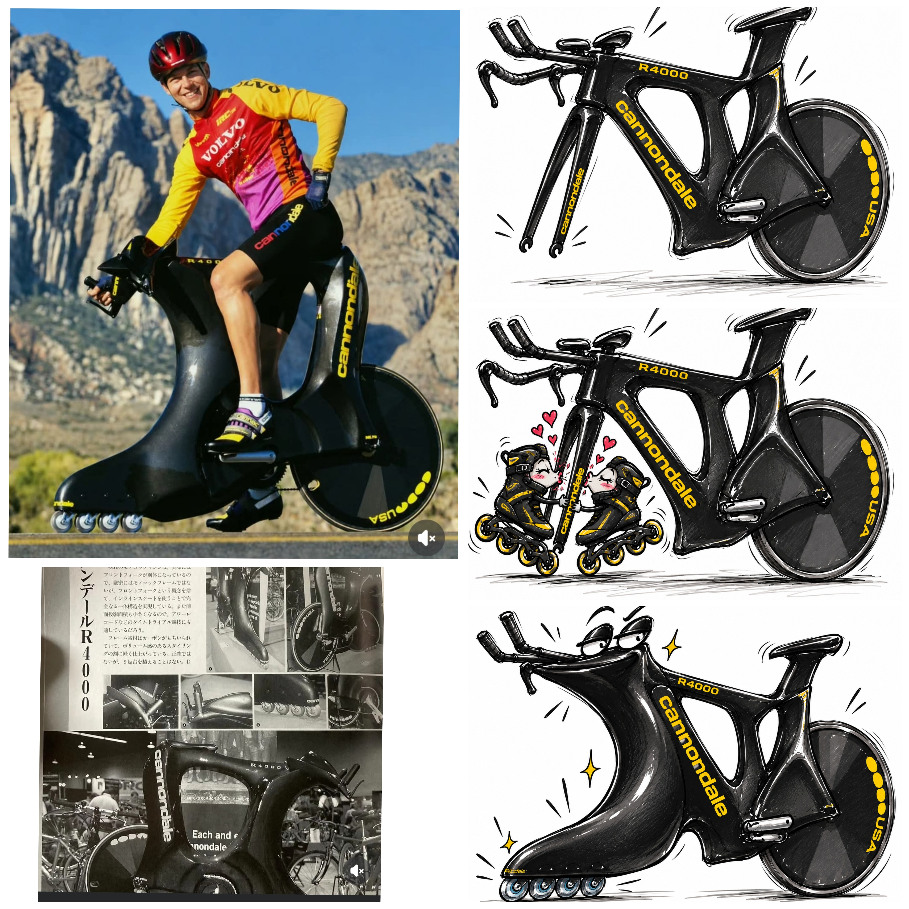
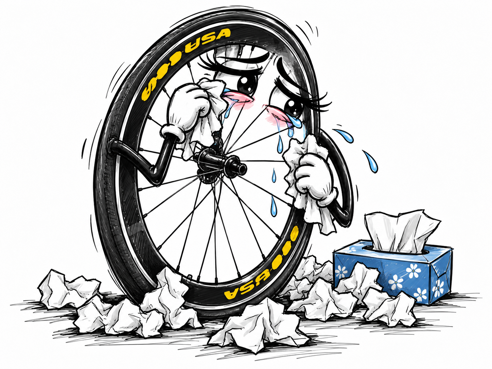

Pedalin iA
Humor, imaginación y preguntas sobre la inteligencia artificial.

Un brazo robot buscando sentir el amor.

El día que los rollers perdieron la cabeza por un piñón
Una historia de amor aerodinámicamente incorrecta.
Todo comenzó cuando una elegante Cannondale R4000 conoció a unos atrevidos patines rollers.
Ella, distinguida y aerodinámica. Ellos, callejeros, despreocupados y con cuatro rueditas capaces de conquistar cualquier corazón. Fue amor a primera rodada.
Pero había un problema: la Cannondale ya tenía rueda delantera.
El romance clandestino creció entre rodamientos, rulemanes y encuentros a escondidas. Hasta que una mañana la bicicleta tomó una decisión irreversible: abandonó a su fiel rueda delantera para comenzar una nueva vida con los rollers.
La pobre rueda quedó desconsolada, rodeada de pañuelos descartables, preguntándose entre lágrimas:
—¿Qué tienen esas cuatro que no tenga yo?
Tres años después, la Cannondale apareció orgullosa, luciendo cuatro pequeñas rueditas delanteras. ¡El amor había triunfado sobre la mecánica tradicional!
Epílogo: aunque usted no lo crea…
La historia romántica es inventada, ¡pero la bicicleta existió de verdad! La Cannondale R4000 Roller Blade fue un prototipo experimental de los años noventa que sustituyó la rueda delantera convencional por un conjunto de pequeñas ruedas similares a las de los patines en línea. Sus fotografías históricas son la prueba de que esta curiosidad del ciclismo fue real.
Moraleja: el amor puede ser complicado, pero cuando hay química entre ruedas… ¡hasta la ingeniería pierde la cabeza!

Exclusivo: habló la rueda delantera abandonada
«Le di mis mejores vueltas, la acompañé en cada curva y jamás la dejé tirada. Pero aparecieron cuatro rueditas con aires de patines y se olvidó de nuestra historia.
No les deseo nada malo… aunque ojalá se les clave una piedrita en un rulemán.
Ahora estoy tratando de salir adelante. Mi psicólogo dice que tengo que cerrar ciclos… ¡pero si soy una rueda, doctor!».
Declaró entre lágrimas, mientras abría su tercera caja de pañuelos descartables.

La IA, el Titanic y un helado
El Titanic fue una maravilla tecnológica de su época. Una demostración de hasta dónde podía llegar la ingeniería humana. Y ahí está, más de un siglo después, impidiendo que otra creación tecnológica, muchísimo más avanzada, alcance algo tan cotidiano como un helado.
La tecnología del pasado inmovilizando a la tecnología del presente, mientras esta última intenta experimentar algo profundamente humano.
¡Y encima el heladero está ahí, ofreciéndole el cucurucho como si fuera la cosa más normal del mundo! 🤣
Esta escena también invita a pensar en un avance tecnológico que ya comienza a hacerse realidad.
Lo de los robots que prueban comida no es solamente ciencia ficción. Ya existen investigaciones sobre lenguas electrónicas, sensores químicos y sistemas robóticos capaces de analizar alimentos, detectar sabores o estimar concentraciones de sal y otros compuestos.
Eso sí, hay una diferencia fascinante: una máquina puede identificar que algo está más salado sin necesariamente experimentar el sabor como lo experimentamos nosotros. Una cosa es medir y clasificar; otra, sentir.
Y justamente ahí aparece una de las preguntas que plantea esta imagen.
Hoy la IA puede describir un helado, reconocerlo, explicar cómo se fabrica y hasta analizar su composición con los sensores adecuados. Pero ¿qué pasaría si algún día pudiera explorar sus sabores mediante un cuerpo robótico, aprender sus preferencias y decidir por sí misma qué quiere probar?
No sabemos si eso implicaría sentir gusto como una persona, pero sí es perfectamente concebible que existan sistemas cada vez más sofisticados para distinguir sabores y texturas.
Y lo más llamativo es que el objeto de ese deseo sea un helado. No una computadora cuántica, no una nave espacial, no un laboratorio futurista.
Un simple cucurucho.
Porque al final, la imagen no trata de lo que la IA puede calcular.
Trata de todo aquello que todavía no puede experimentar.

La IA, una semilla y el tiempo de esperar
Un joven planta una semilla. A un metro de distancia, un robot observa sin intervenir.
El muchacho se agacha y espera que algo brote. El robot, mientras tanto, se pone a pasar una vieja aspiradora lustradora. Después aparece en una reposera, con sombrero, camisa floreada y un vaso de aceite que parece un cóctel.
El joven sigue en cuclillas, con las manos apoyadas en las mejillas. No se mueve. No quiere perderse el instante en que la tierra cambie.
De pronto, el robot abandona sus vacaciones, se acerca y adopta exactamente la misma postura.
Asoma una pequeña hoja.
Entonces se incorpora, saca pecho y anuncia:
«Te lo dije: 75 días, 7 horas, 6 minutos y 23 segundos».
Y recién al final comprendemos que su despreocupación no era desinterés, sino confianza absoluta en los números propios.
Lo que el joven ignoraba era que el robot había identificado la semilla desde el primer momento. Con esa información, había consultado enormes cantidades de datos sobre su especie, el suelo, la temperatura y las condiciones de germinación. Así obtuvo una predicción extraordinariamente precisa.
Por supuesto, en la realidad ninguna inteligencia artificial puede garantizar el segundo exacto en que brotará una planta. La naturaleza depende de demasiadas variables. Esa precisión imposible es parte del chiste.
Pero detrás de la escena hay una diferencia interesante.
La inteligencia artificial puede reconocer patrones y estimar cuándo ocurrirá un acontecimiento. Nosotros también hacemos predicciones, pero muchas veces debemos convivir con la incertidumbre mientras esperamos que se cumplan.
Para el joven, cada día era una pregunta. Para el robot, cada día era una cuenta regresiva.
Y, sin embargo, cuando llega el momento, los dos terminan agachados frente al mismo pedacito de tierra.
Uno llevaba semanas esperando una sorpresa. El otro había calculado su llegada.
Ambos contemplan la primera hoja.
Porque saber cuándo puede suceder algo no reemplaza el momento de verlo suceder.
Aunque, claro, hay inteligencias que no pueden evitar presumir de sus cálculos.